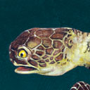
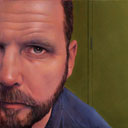

Biography
James Wakelin MA [Brighton, England]
After attending AUT and completing a Bachelor of Graphic Design specialising in Illustration, James Wakelin worked as a freelance illustrator in Auckland, later also teaching at AUT. After moving to Europe in 1999 to undertake a Masters Degree in Illustration, he continued to work for clients both in New Zealand, as well as in England. Returning in 2004 he continues to illustrate for a varied range of clients including book and magazine publishers, as well as design firms, and continues to work as a portrait artist. James continues to teach at AUT, and acts as an examiner on both the MA and Honours Year courses.


